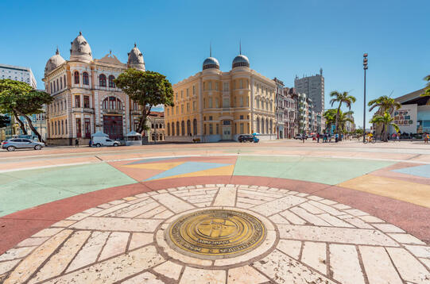
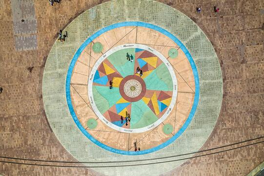
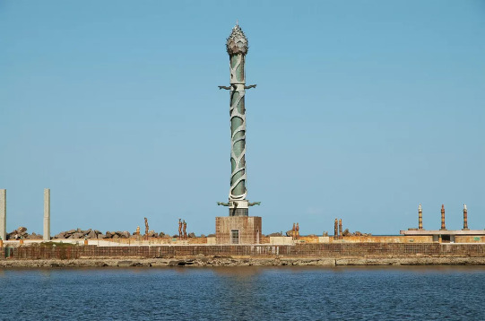

O que é o Marco Zero?
Localizado no coração do Recife Antigo, o Marco Zero marca o ponto inicial das distâncias rodoviárias de Pernambuco
Além de se destacar como um dos cartões postais mais emblemáticos da cidade.
Curiosidades
O chão da praça possui uma rosa dos ventos gigante, feita pelo artista Cícero Dias, simbolizando os quatro pontos cardeais.
É um ótimo lugar para tirar fotos e apreciar o pôr do sol.
Arredores do Marco Zero
Em frente ao Marco Zero, o Parque das Esculturas de Francisco Brennand destaca-se na paisagem.
Na imagem, a Coluna de Cristal, sua obra mais conhecida.